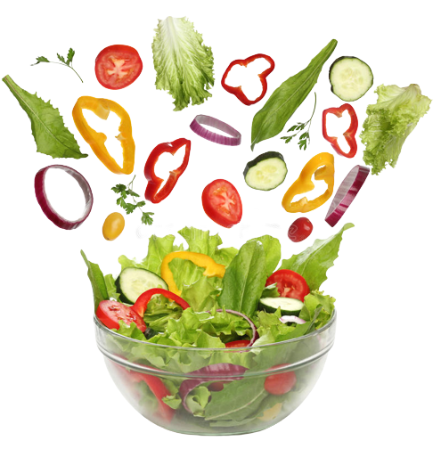

the scrappier way of cooking

Well, here are the stats... 206 billion pounds of food waste were generated
in America in 2017, or between 30-40 percent of the food supply, according
to the United States Department of Agriculture (USDA).
In 2020, roughly
1,000 tons of food was wasted every minute. This impacts food security,
resource conservation, and contributes to the 18% of total U.S. methane
emissions that come from landfills!